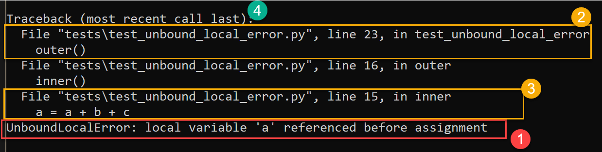
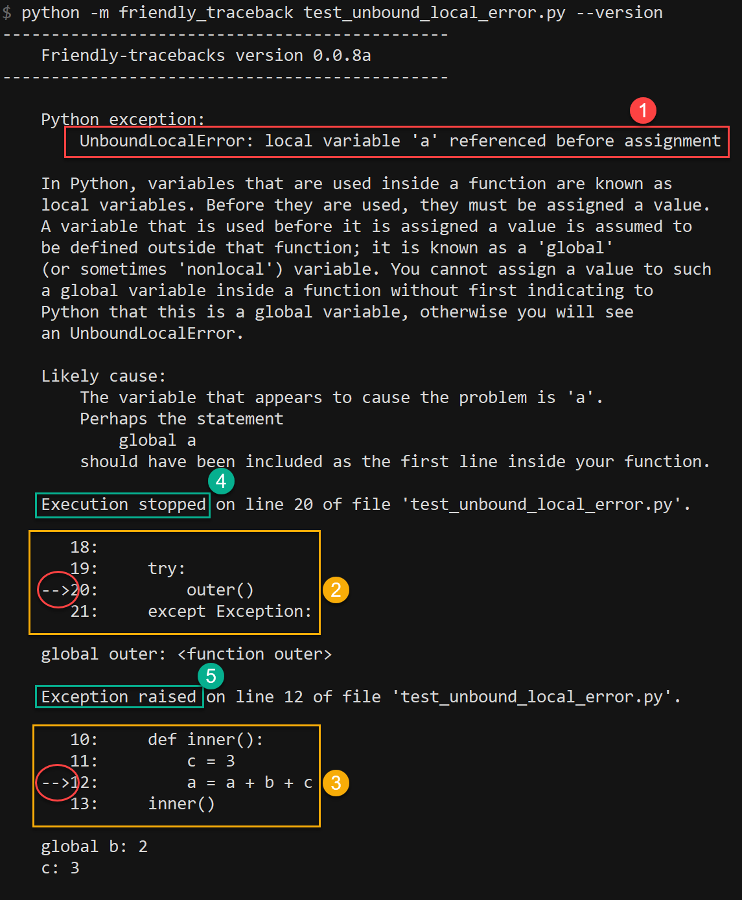
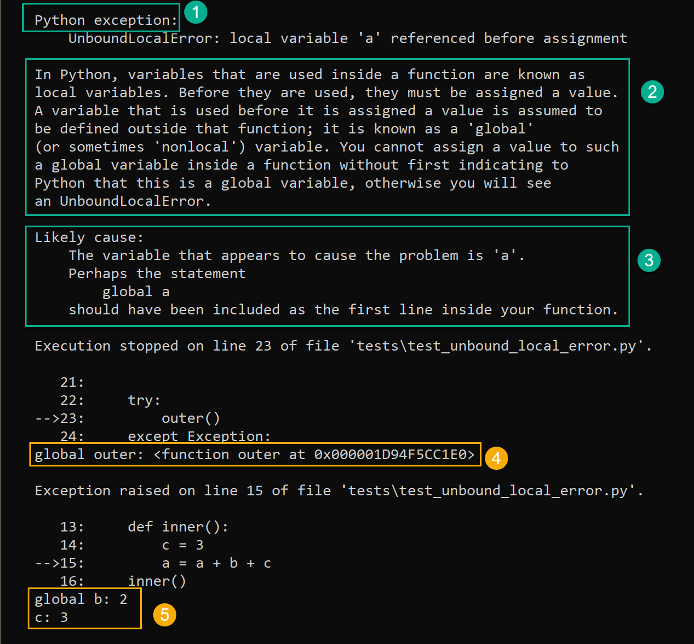
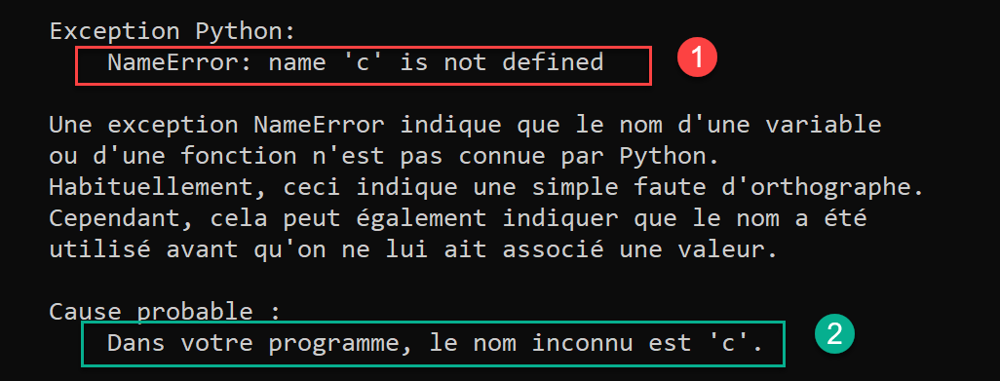
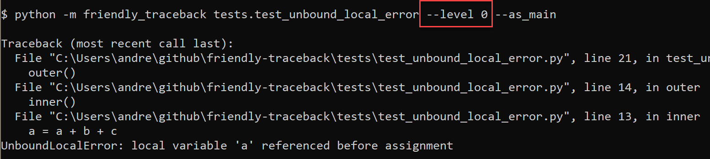
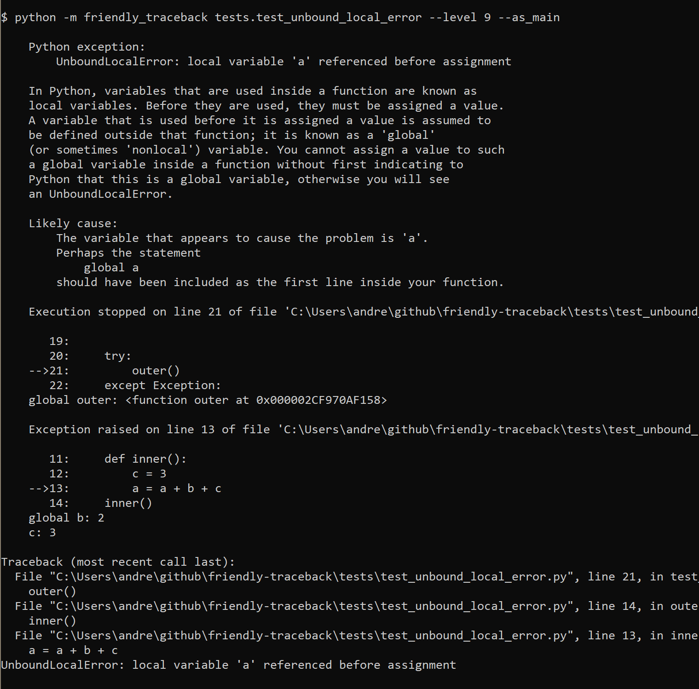
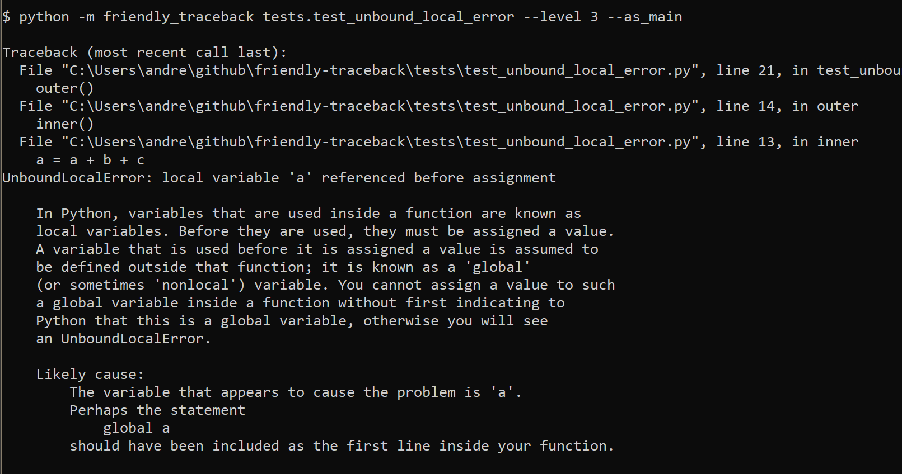

Some thoughts on the design of friendly-traceback¶
The following are thoughts on the design of this project. The content of this file will be changed as this project evolve.
Warning
It is likely that experimentations with features will proceed faster and in slightly different ways than the content of this page would suggest. Our current focus is primarily on code development, and not on keeping this document up to date.
Purpose¶
Friendly-traceback primary purpose is to make it easier for beginners and/or for people that have limited knowledge of English to understand what caused a program to generate a traceback.
A secondary goal is to help them learn how to decipher a normal Python traceback and use the information to understand what went wrong and how to fix it.
Open questions¶
Normally, an open section would be included at the end, but this document is getting so long that few people might read it to the very end. Furthermore, it might be useful to have these in mind while reading the rest of this document.
In addition to showing the line of code where an exception is raised, should we include other lines of code for contextual information and, if so, how many?
Python’s cgitb module shows five lines of context for each “item” in a traceback. We currently show only four.
Should we aim to provide information about all standard Python Exceptions, or just a subset? Should we include also Warnings?
The full list of exceptions and warnings is included at the end of this document as well as some notes about some Exceptions that have been purposely excluded.
Should translations (
.pofiles) be limited to general translations for a given language (e.g.fr) and not include region-specific version (e.g.fr_CA)?Should we offer a single explanation as to the likely cause of the error, or do like Thonny and offer weighted alternatives? See Issue8 for a discussion.
Giving too much information (“wall of text”) can be overwhelming; giving a limited amount of information might not be helpful enough to help beginners understand what went wrong and how to fix their program. How do we find the right balance?
Anatomy of a standard Python traceback¶
Here’s an annotated screen capture of a standard somewhat typical Python traceback:
{kind=link}
- Some information about the exception raised which often includes a terse message.
- The line of code which was executed and eventually led to an exception being raised. Most often, this will be code written by the end-user.
- The actual line of code where the exception was raised.
- “(most recent last call)” informs us how about the order in which the execution occurred.
In some cases, there can be many calls in between 2 and 3; this can contribute to the confusion experienced by beginners when they are confronted with similar tracebacks.
Basic anatomy of a friendly traceback¶
Let’s have a look at a “friendly traceback” by focusing first on the items corresponding to those we have highlighted above for a standard traceback.
{kind=link}
- The exact same terse information provided by Python about the exception raised.
- The line of code which was executed and eventually led to an exception being raised, shown with a few additional lines to help understand the context.
- The actual line of code where the exception was raised, shown with a few additional lines to help understand the context.
- and 5. Instead of relying simply on the “(most recent last call)” note given by Python, we explicitly state which was the line of code where the program stopped, and which one where the exception was raised. This is something that can be translated, as shown for the corresponding French version.
{kind=link}
Note that, contrarily to standard Python tracebacks, only the first and last call made are shown. In most cases, this should be sufficient to figure out the cause of the exception, and how to fix it, while avoiding overwhelming the user with too much information.
Other parts of a friendly traceback¶
In addition to what was mentioned above, here’s an annotated screen capture highlighting the other information included in a “friendly traceback”, all of which can be translated.
{kind=link}
- A header. This could be customized if a third-party module implemented its own custom exceptions.
- Some generic information about a given exception, simply based on its name.
- Some specific information about this exception. For many exceptions, this
information is obtained from the message included in a standard Python
traceback. Sometimes, like in the above, it can include a suggestion as
to how to fix the problem.
Other times (see an example below for
NameError), it is simply rephrasing the information in the Python message which can then be translated. - and 5. This shows the value of all known variables (local and global) which are found on the lines where problems have been noted.
Below is an example where the standard Python message [1] for a NameError
is simply rewritten [2] in English, so that it could be translated.
{kind=link}
And here is the corresponding French version:
{kind=link}
Variable information¶
As mentioned above, we include the value of all known variables found
on the offending line. In the example below (IndexError), this
information [1] together with the reminder [2] and the code from
the offending line [3] give enough information to properly diagnose the error.

In some cases, the value of some variables could, in principle,
yield an enormous amount of text.
To avoid this situation, we truncate any value that exceeds a predetermined
length. However, when we do so, if the variable has a __len__ attribute,
we show its value as it can sometimes be helpful in identifying the problem.

SyntaxError: invalid syntax¶
For SyntaxError, Python often offers very little useful information
beyond where it finally identified that a SyntaxError occurred.
Sometimes, the offending code actually occurred well before: for example,
an open bracket might have been inserted many lines prior to where
the absence of the corresponding closing bracket was noted to cause an error.
For SyntaxError, friendly-traceback does a fairly simple analysis
of the code and tries to identify a single cause which produced the
error.

The idea of showing a single possible cause for a given error is different than that taken by Thonny which, in some cases, attempts to identify more than one possible cause giving rise to an exception, as well as ordering them in order of likelihood, based on its own analysis of the code. Those interested by what Thonny does might want to have a look here.
The idea of showing more than one possible cause for an error is discussed in Issue8.
As a concrete example, in the image below, Thonny shows the normal Python traceback [1], and offers some additional explanations [2], parts of which can be hidden or revealed by clicking on a button.

Localization¶
As noted above, it is possible to translate almost all the text provided by friendly-traceback.
The determination of which language is used to provide translations
is normally determined by using Python’s locale.getdefaultlocale().
However, it can be over-ridden in the following way, in order
of precedence:
Using
friendly_traceback.set_lang(lang)Using the environment variable
os.environ['FriendlyTracebackLang']. This can be useful for temporarily overriding other settings.Using variables found in a
friendly.inifile located in the user’s home directory. As an example, my OS locale isfr_CA. Since I prefer to view the English version as a default, here is the content of my friendly.ini file:[friendly] lang = en
As mentioned above, and last in priority, the default is to use the information provided by
locale.getdefaultlocale().
The information provided by locale.getdefaultlocale() includes
not only a language code, but information about a specific region as well.
For example, on my computer, this is fr_CA. As far as I can tell,
gettext does not have a graceful fallback from the specific (fr_CA)
to the generic (fr); it does have the option of having a fallback
to the version hard-coded in a program.
What we have done is including the possibility of loading a specific translation with no fallback. If an exception is raised, we then reduce the length of the language code to the first two characters, and attempt to load the translation while using gettext’s option of falling back to the hard-coded version if needed.
Important
By default, we should perhaps ask translators to provide generic 2-letter code versions for translations, so that a better fallback than the default English version could be found. See the related open question above, as to whether or not this should be provided in addition to any region specific version.
Verbosity¶
The useful amount of information to be provided by Friendly-traceback will be determined from the feedback from actual users. Our current thoughts are that a user should never be shown an overwhelming amount of information; ideally, when using a REPL, no scrolling should be required to display all the information.
Currently, the amount of information provided can be controlled via a “level”. Here are the current levels available, with a sample output.
Level 0¶
This disables friendly-traceback and just shows the normal Python traceback. It can be set from the commmand line as shown below:
{kind=link}
Level 1¶
This is the default, showing all the information mentioned previously.
The screen capture below shows that we set the value explictly to 1; however,
we could have not included the option --level 1 and the result would
have been the same
{kind=link}
Level 2¶
Same as level 1 but with the normal Python traceback printed before.
Important
Which level to use by default?
Currently, level 1 is the default. Since the secondary aim of Friendly-traceback is to help users learn how to use the information from normal traceback, perhaps the default should be level 2.
{kind=link}
Level 9¶
Same as level 1 but with the normal Python traceback printed after. The value “9” is there for historical reasons and may be subject to change.
{kind=link}
Level 3¶
The normal Python traceback followed by some generic information about this type of error and the likely cause that was identified (if any).
{kind=link}
Setting the verbosity level¶
This can be done when using friendly_traceback explicitly in the
program with friendly_traceback.set_level(),
or as an option from the command line.
If no such option is provided, then it should be set either from
the local environment variables (as for the language) or from a global
.ini file.
{kind=link}
Extensibility¶
For projects that have their custom Exceptions, like AvantPy, it should be possible to add the custom exceptions to those handled by friendly-traceback. This could perhaps be achieved by having custom exceptions include a special method, like:
class MyException(Exception):
def explain(self):
return _("Some detailed explanation")
Friendly-tracebacks could then first look to see if this special method exists for a given exception; if so, it would just use it “as is”.
Additional configuration¶
It should be possible to add some colours to various parts of the traceback information; however, this should likely be done only:
- if friendly_traceback is embedded in another application which has full control over its display (some terminal emulators might not support control characters required for colours - or do so in a way that might be counter productive)
- Based on values found in a
.inifile.
Important
This additional colour feature should only be implemented after all other issues have been dealt with.
Note that the information obtained by Friendly-traceback is collected in a “structured” form, as suggested in Issue8 and noted in Issue10, so that it could be formatted differently by any program using Friendly-traceback.
Other similar projects¶
Many other projects do some enhanced traceback formatting, however none that we know of aim at
- making tracebacks easier to understand by beginners
- translating traceback information.
Still, there is much to learn by looking at what others are doing. The following is an incomplete list of projects or modules to look at:
- https://docs.python.org/3/library/cgitb.html
- https://github.com/albertz/py_better_exchook/
- https://github.com/Infinidat/infi.traceback
- https://github.com/laurb9/rich-traceback
- http://www.wotevah.com/code/log.py
- https://github.com/ipython/ipython/blob/master/IPython/core/ultratb.py
- https://github.com/patrys/great-justice
- https://github.com/Qix-/better-exceptions
- As mentioned in Issue8, Thonny already has something similar implemented.
- https://github.com/cknd/stackprinter
Reference: known exceptions¶
In the following, those that are followed by an * had been implemented when this page was last updated.
Those followed by **, namely SystemExit and KeyboardInterrupt,
have been excluded as it seemed rather counter-productive to intercept them.
Those followed by #, namely GeneratorExit, StopIteration, and
StopAsyncIteration, are excluded as they should not normally be
seen by an end user - at least, not by beginners who would need
additional explanation about the meaning of such exceptions.
Furthermore, in the case of StopIteration, see
PEP 479
It is very likely that the information below is not up to date.
BaseException
+-- SystemExit **
+-- KeyboardInterrupt **
+-- GeneratorExit #
+-- Exception
+-- StopIteration #
+-- StopAsyncIteration #
+-- ArithmeticError *
| +-- FloatingPointError
| +-- OverflowError
| +-- ZeroDivisionError *
+-- AssertionError
+-- AttributeError
+-- BufferError
+-- EOFError
+-- ImportError *
| +-- ModuleNotFoundError *
+-- LookupError *
| +-- IndexError *
| +-- KeyError *
+-- MemoryError
+-- NameError *
| +-- UnboundLocalError *
+-- OSError
| +-- BlockingIOError
| +-- ChildProcessError
| +-- ConnectionError
| | +-- BrokenPipeError
| | +-- ConnectionAbortedError
| | +-- ConnectionRefusedError
| | +-- ConnectionResetError
| +-- FileExistsError
| +-- FileNotFoundError
| +-- InterruptedError
| +-- IsADirectoryError
| +-- NotADirectoryError
| +-- PermissionError
| +-- ProcessLookupError
| +-- TimeoutError
+-- ReferenceError
+-- RuntimeError
| +-- NotImplementedError
| +-- RecursionError
+-- SyntaxError *
| +-- IndentationError *
| +-- TabError *
+-- SystemError
+-- TypeError
+-- ValueError
| +-- UnicodeError
| +-- UnicodeDecodeError
| +-- UnicodeEncodeError
| +-- UnicodeTranslateError
+-- Warning
+-- DeprecationWarning
+-- PendingDeprecationWarning
+-- RuntimeWarning
+-- SyntaxWarning
+-- UserWarning
+-- FutureWarning
+-- ImportWarning
+-- UnicodeWarning
+-- BytesWarning
+-- ResourceWarning